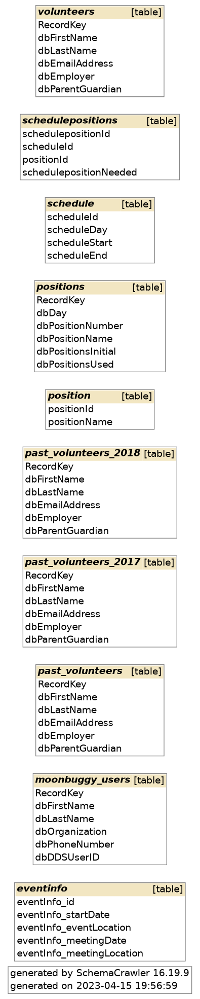
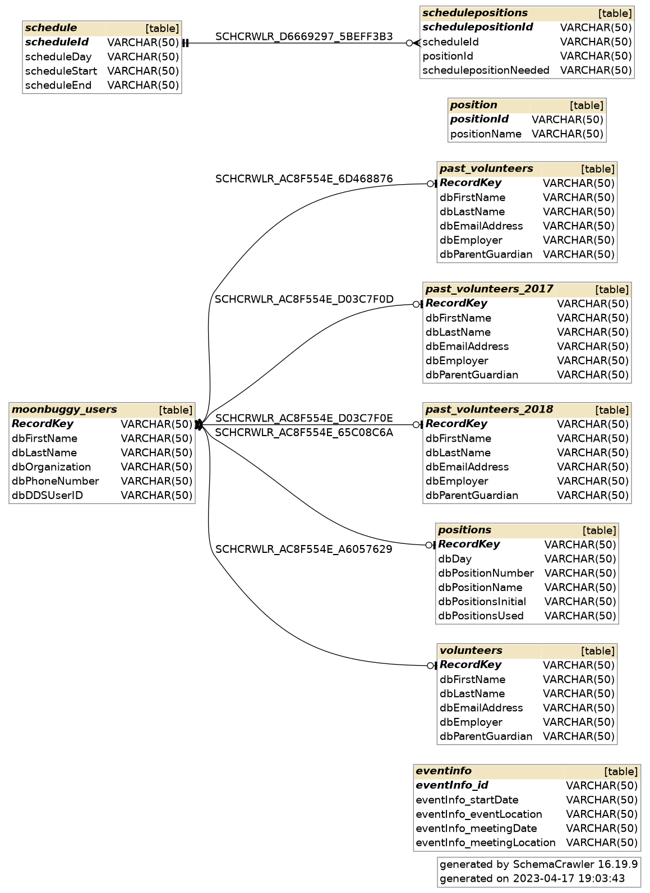
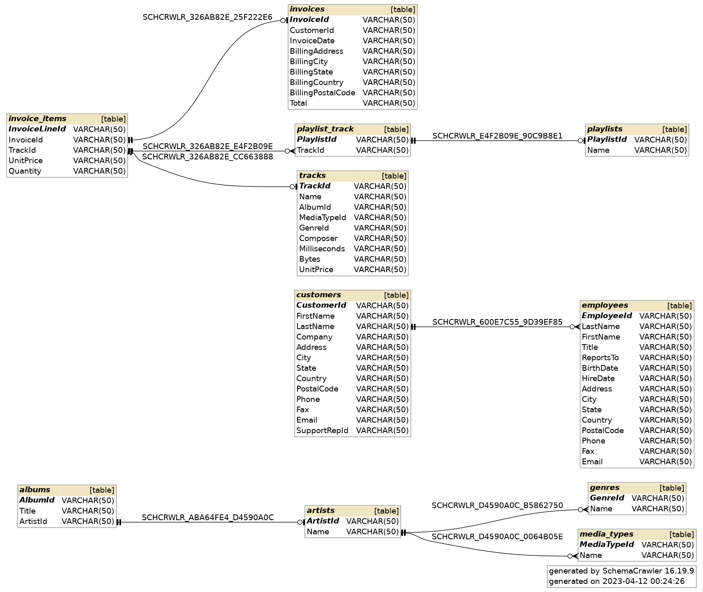
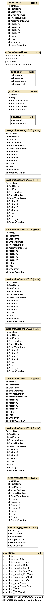

Further Examples of Data Prometheus
This example is a slightly larger version of the example from my portfolio's main page. This shows the ability of Data Prometheus to determine relationships between multiple different tables, as well as more clearly showing the moonbuggy_users table as the source that the other RecordKey keys are referencing.
↓
This is an example of Data Prometheus attempting to re-map a database that already has relationships. Due to the project being a student capstone project, we were unable to fully develop Data Prometheus to our liking. Though it is able to find a large number of relationships present in the data, it is unable to properly map them due to ambiguity, as well as finding completely incorrect relationships.
Data Prometheus currently only thrives in environments where keys are identically named and table structure has a clear hierarchy.

↓
An even larger example of the moonbuggy database, this is the database that we were originally given. The previous examples were modified to be clearer and easier to understand.
